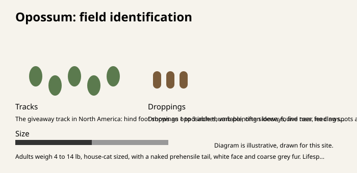

Animal guide - upstate New York
Opossum Removal in Upstate NY
The Virginia opossum, the animal most people just call a possum, is the most misunderstood animal on this site. It looks alarming at midnight, hissing with a mouth full of teeth, and it is a slow, shy nomad that eats ticks by the thousand and almost never carries rabies. Opossums still do not belong in your attic, crawl space or garage. This page separates myth from fact, and covers signs, seasons, humane eviction, and costs.
What are the signs of a opossum problem?
- Slow shuffling sounds and dragging in the attic or crawl space at night
- A musky odour near a crawl space vent, garage corner or deck
- Tracks in mud: five toes with the hind thumb sticking out sideways, no claw marks
- Tipped pet food bowls and raided garbage, with food eaten on the spot
- A tail drag mark in dust or light snow between cover and the food source
- An opossum playing dead in a garage or window well when cornered by a dog


The giveaway track in North America: hind foot shows an opposable thumb pointing sideways, five toes, no claws. Nothing else looks like it. Droppings 1 to 3 inches, variable, often loose, found near feeding spots and den entries. Less structured than raccoon latrines. Adults weigh 4 to 14 lb, house-cat sized, with a naked prehensile tail, white face and coarse grey fur. Lifespan in the wild is only 2 to 4 years.
What damage do opossums do inside a home?
Opossums are tenants, not wreckers. They move into spaces other animals opened, attics entered through a raccoon's hole, crawl spaces with a broken vent, garages left ajar, and they damage little themselves beyond soiling insulation with droppings and urine where they sleep. The genuine problem is what follows them in: once an opossum is using an opening, raccoons and skunks notice it too, and the opossum's presence is proof the house is open. They also die in inconvenient places more often than other species, and a carcass in a wall void is a memorable week.
How do opossums behave through the New York year?
Opossums are nocturnal wanderers with no fixed territory, drifting between dens every few nights, which means an opossum in the attic often leaves on its own within days. Females carry joeys in the pouch from late winter, then on their backs into summer. When cornered they hiss, drool and bare around fifty teeth, and if that fails they play dead, convincingly, for up to hours. It is theatre. They are poor fighters, poor climbers by raccoon standards, and frostbite on their naked ears and tails is a real winter limit in upstate New York.
Opossums breed from late winter, with pouch young through spring and back-riding joeys into summer, so spring crawl space calls often involve a family. Summer brings peak wandering and the most garage and deck encounters. Autumn is sealing season, before the cold. Winter is hard on opossums in upstate New York: frostbitten ears and tails are common, animals push into crawl spaces and garages for warmth, and a midwinter opossum indoors is usually sheltering, not established. Evictions stay humane and quick in every season.

Are opossums a health risk to my family or pets?
Here is the myth-busting part, with the facts straight. Opossums almost never carry rabies: their body temperature runs low for a mammal, which makes the virus unlikely to take hold, and they are not a rabies vector species in New York. They also groom constantly and eat the ticks they pick up, including deer ticks, which makes them a net benefit in the yard. The real cautions are ordinary: droppings in an attic still need proper cleanup, and their waste can carry leptospirosis, so crawl space work is glove and mask work, as with any animal.
What does New York law say about opossum removal?
Opossums are protected wildlife in New York in the sense that their taking is regulated, and nuisance situations around homes are handled by DEC-licensed operators. They are not rabies vector species, so the transport rules that bind raccoon and skunk work are lighter, but relocation still performs poorly for an animal with no territory and a short life. Eviction and sealing remain the professional standard: the opossum is shown the door, the door is then closed to everything, and the animal continues its rounds in the neighbourhood it knows.
Can I handle opossum removal myself?
Because opossums are nomads, the best DIY is patience plus housekeeping: remove pet food and fallen fruit, secure garbage, and many opossum visits simply end. A bright light and a radio in a crawl space can hurry a transient along. What not to do is grab one: a cornered opossum bites, theatre or not, and a mother with joeys should never be sealed in or out. If an opossum has settled, raised young, or died somewhere in the structure, that is the point to call a licensed operator.
One last thing on choosing help. Get the inspection findings in writing, with photographs of each entry point, and get removal, sealing and cleanup as separate lines on the estimate. Ask what material closes each hole, because foam and caulk alone are not exclusion. And ask the season question out loud: if the timing is wrong for this species, an honest operator will tell you to wait, and offer the inspection and quote now so the work is ready the week the window opens.
How does humane opossum removal work, step by step?

Confirm it is an opossum and find how it got in
Tracks with the sideways thumb, droppings and the entry gap tell the story. Because opossums usually use openings other animals made, the inspection also reads the house for the raccoon or squirrel work that may have come first.
Check for joeys before eviction
From late winter through summer the den is checked for a mother with pouch or back young. Families are evicted together, with the young kept with the mother, never separated or sealed apart.
Evict with a one-way door or gentle live capture
Opossums respond well to one-way doors and to simple encouragement: light, sound and the removal of food and shelter. Where capture is needed it is low-stress, and the animal is released on the property into nearby cover the same evening.
Seal the entry and clean the den site
The opening is closed with proper materials, vent screens are repaired, droppings and soiled insulation are cleaned out, and attractants are removed so the next wanderer finds a closed house and an empty menu.
In the local data
This is not a theoretical animal for these towns. Observers have logged 311 research-grade iNaturalist observations of the virginia opossum (Didelphis virginiana) across the ten town areas this site covers, and the species was recorded in all 10 of the 10 areas.
Data: iNaturalist, 25 km radius per town, fetched November 2026.
How much does opossum removal cost?
| Service | Typical range | Notes |
|---|---|---|
| Inspection and entry-point survey | $150-$300 | Often credited toward the work when you proceed. |
| Single-animal humane removal | $300-$600 | One animal, one entry point, straightforward access. |
| Bat exclusion, full home | $800-$2,500 | Colony work: one-way valves, full seal, guano check. |
| Attic cleanup and disinfection | Quoted after inspection | Depends on droppings volume and insulation condition. |
Opossum work usually sits at the simple end of the single-animal band, especially a transient animal that just needs a door and a sealed vent. Costs climb only when the opening turns out to be part of a bigger raccoon or squirrel problem, or when a carcass has to be located in a wall.
These are typical market ranges for upstate New York, published so you can sanity-check any quote. They are not a quote for your home: access, entry count, young in the den and cleanup volume move the real number, which is why the inspection comes first and the estimate is written.
Opossum removal in your town
The method on this page is state-wide, but the animal pressure, housing stock and season are local. These town pages combine the opossum method with each town's housing, waterways and cost notes, including sub-services like attic, chimney and under-deck work, babies, damage repair and emergencies.
Ithaca Binghamton Poughkeepsie Kingston Newburgh Utica Saratoga Springs Watertown Auburn Elmira
Opossum removal questions, answered
Are opossums dangerous to my pets?
Almost never in the way people fear. Opossums are bluffers, not fighters: hiss, teeth, drool, and playing dead are the whole act, and given any escape route they take it. Dogs occasionally corner one and can get bitten in the scuffle, so call the dog off rather than letting it press the encounter. Serious pet conflicts with opossums are rare, and an opossum in the yard is far more likely to eat your ticks than trouble your animals.
Do opossums carry rabies?
It is genuinely rare, and opossums are not classed as a rabies vector species in New York. Their normal body temperature is lower than most mammals, which makes it hard for the rabies virus to survive in them. Rare is not impossible, so an opossum behaving very oddly still deserves distance and a call, but the midnight opossum on the deck is not the rabies risk people imagine. That reputation belongs to raccoons, skunks and bats.
How do opossums get into attics if they are poor climbers?
They climb better than their reputation, using fences, stacked wood, rough siding and low branches, and more often they walk in through an opening something else made: a raccoon's torn soffit, a broken crawl vent, a garage door left up at dusk. Opossums are opportunists of other animals' work. That is why an opossum in the attic always triggers a full entry survey: the animal is a symptom, and the hole is the disease.
What is the difference between opossum and raccoon tracks?
The opossum's hind track is unmistakable once you have seen it: five toes with the inner toe, a thumb, sticking out sideways at a wide angle, and no claw marks. Raccoon tracks look like tiny human hands, five long toes in line, often with claws showing, and they come in neat walking pairs along mud and dust. In attic dust or crawl space mud, the sideways thumb settles the identification on its own.
How much does opossum removal cost?
Opossum removal usually prices inside the standard single-animal band, $300 to $600 after a $150 to $300 inspection, and simple transient cases sit at the low end. The quote grows if joeys are involved, if a carcass must be found in a wall, or if the entry survey reveals a wider raccoon or squirrel problem that needs its own exclusion work. Ask for those as separate line items so you can see exactly what you are paying for.
An opossum is playing dead in my garage. What do I do?
Leave it alone, open the garage door or a clear exit path, keep the dog in, and give it an hour or two. Playing dead is an involuntary stress response, and the animal will revive and leave on its own once it feels safe, usually slipping out at dusk. Do not pick it up to help it outside: a reviving opossum in your arms is a biting opossum. If it is still there next morning, or looks injured, call a licensed operator or a wildlife rehabilitator.
Do you use poison for opossums in the attic or around the home?
No. Poison is not part of humane opossum work on this site, and for good reason. A poisoned animal usually dies somewhere unreachable, in a wall, a flue or under a floor, and the entry point stays open for the next animal anyway. Eviction, one-way doors where they fit, live capture where they do not, and then sealing solves the problem at the structure, which is where it actually lives.
Will you seal the entry points, or just remove the animal?
Sealing is the point of the job, and any quote that only covers removal is half a quote. The process here runs in order: inspect and map every entry, evict or capture the opossums, confirm the space is empty, then close each opening with materials the animal cannot chew, dig or pry through. Removal without exclusion is a short rental of an empty attic, and the next tenant rarely waits a full season to move in.
Are wildlife removal operators licensed and insured in New York?
They should be, and you can check before anyone climbs your roof. Nuisance Wildlife Control Operators in New York work under a NYS DEC licence, carry insurance for roof and attic work, and should give you the licence details on request. The checklist is simple: licence, insurance, a written estimate with line items, and a method that starts with inspection and ends with sealing. An operator who cannot produce the first two has not earned the job.
How fast can a wildlife technician get to my home?
Response time depends on where in upstate New York you are and what the opossum is doing. An animal in the living space, a chimney or a wall void is treated as urgent and usually gets a same-day or next-day response across the towns this site covers. Attic evictions and barrier work are booked as inspections first, normally within a few days, and the written quote follows the inspection, not a guess over the phone.
How much does opossum removal cost in upstate New York?
The canonical bands on this site apply to every town: inspections run $150 to $300 and are often credited toward the work, a single-animal humane removal is typically $300 to $600, full bat exclusion runs $800 to $2,500, and attic cleanup is quoted after inspection because it depends on what the animals left behind. Opossum work usually sits at the simple end of the single-animal band, especially a transient animal that just needs a door and a sealed vent. Costs climb only when the opening turns out to be part of a bigger raccoon or squirrel problem, or when a carcass has to be located in a wall.